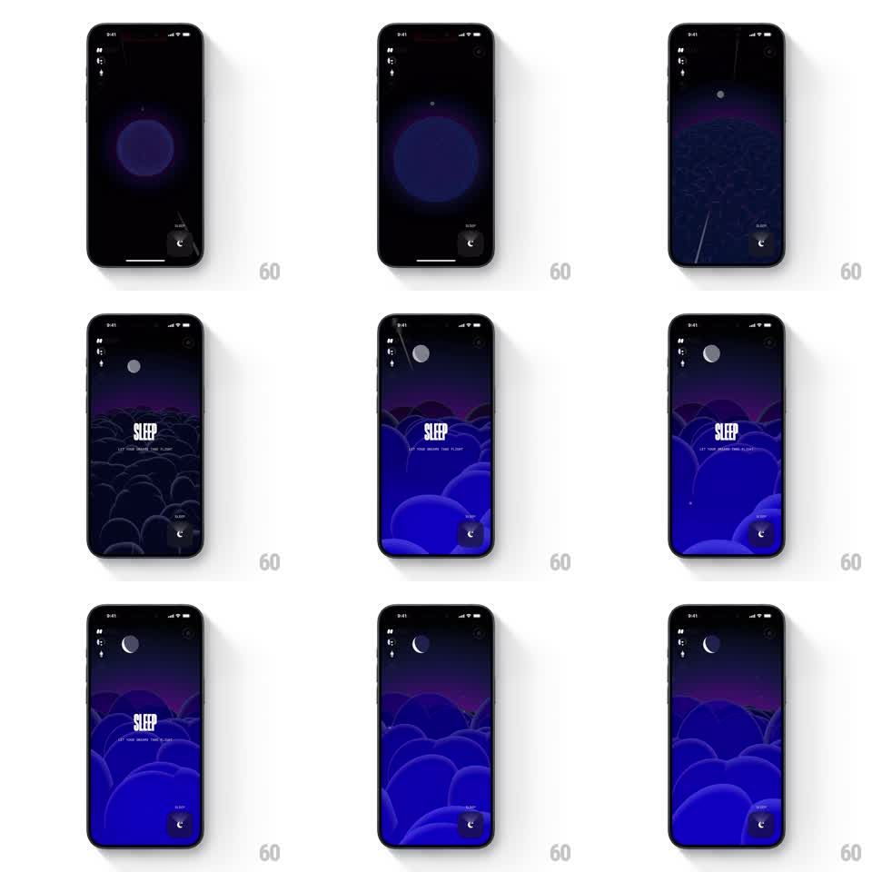

Media
Frame-by-frame

Rebuild this animation 1:1: Not Boring Vibes' sleep zoom - a glowing orb in darkness expands until it becomes the moon over a layered cloudscape, resolving into the SLEEP title screen.

Rebuild this animation 1:1: Not Boring Vibes' sleep zoom - a glowing orb in darkness expands until it becomes the moon over a layered cloudscape, resolving into the SLEEP title screen. ## Integration Integration: stack-agnostic spec - springs given as stiffness/damping, timed motions as duration + curve; map every value to your framework and animation library of choice. ## Scene Near-black screen with a single soft purple orb glowing center. The orb grows and brightens, revealing itself as a full moon; around it, layered rolling clouds rise in deep blues, a purple horizon band behind. Final state: moon top-center, "SLEEP" in condensed type with the line "Let your dreams take flight", cloud layers filling the frame, sleep button bottom-right. ## Motion spec Pattern: continuous zoom reveal from orb to cloudscape. - The orb scales from ~80px to full moon (~1.8s, ease-in-out), its glow blooming outward as it rises toward the top of the frame. - Cloud layers fade and rise in sequence - farthest layer first, then mid, then front (each 600ms, ~150ms stagger) - building the parallax stack. - The horizon purple band crossfades in with the mid layer. - "SLEEP" and its tagline fade up (400ms) once the front clouds settle; the sleep button fades in last (200ms). - Idle: clouds drift slowly at different rates (front fastest), the moon halo breathing gently (scale 1.0 to 1.04, 3s sine). ## Calibration - The zoom never cuts: the orb IS the moon the whole time, just scaling and rising. - Cloud edges stay soft and rounded - the calm depends on it. ## Reduced motion Crossfade from orb to the final composed scene. ## Don't miss - Deep-blue palette with a single purple horizon accent - do not warm it up. - Layer count matters: at least three distinct cloud depths for the parallax to read.